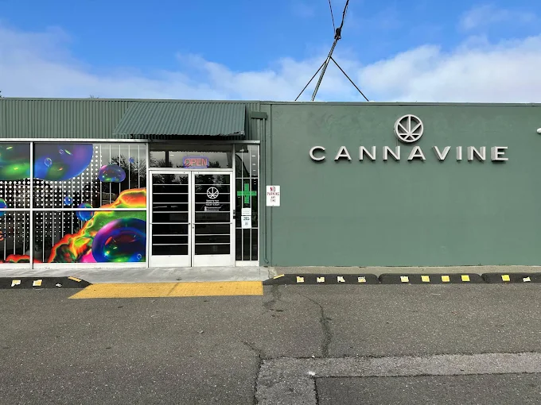
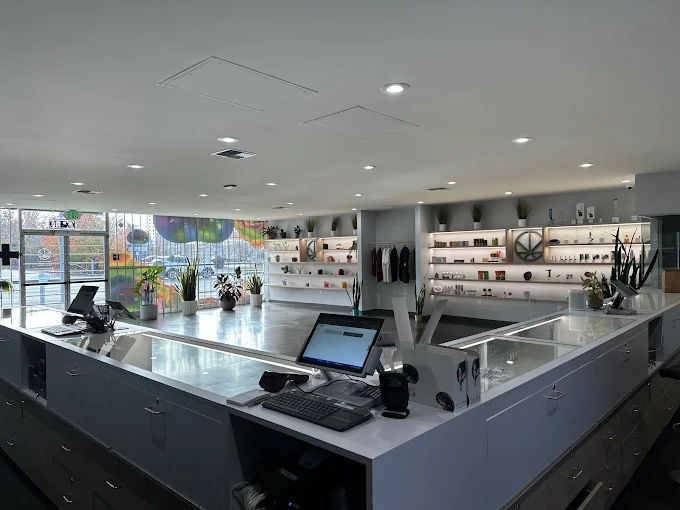
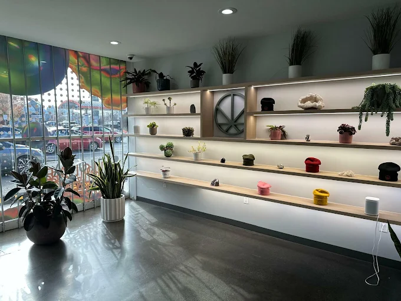

Genuine Hospitality
Friendly service that reflects Santa Rosa's down-to-earth personality.
Sonoma County Cannabis, Cultivated
An elevated, welcoming dispensary rooted in Santa Rosa's relaxed Wine Country spirit, genuine hospitality, and carefully curated California cannabis.
Open daily, 9:00 AM to 9:00 PM

1831 Guerneville Road, Suite AWelcome to Cannavine
Minutes from downtown Santa Rosa, Cannavine brings a polished yet easygoing cannabis experience to the heart of Sonoma County. The store serves Santa Rosa, Roseland, Rincon Valley, Windsor, Rohnert Park, and neighboring Wine Country communities.
Inside, modern comfort meets local character. The team creates space for real conversation, thoughtful discovery, and clear guidance, whether this is your first visit or you already know exactly what you enjoy.


Cultivating the Experience
Every visit begins with listening. The Cannavine team learns what kind of moment you want to create, then explains formats, effects, terpene profiles, and potency in plain language.
Friendly service that reflects Santa Rosa's down-to-earth personality.
Recommendations shaped around your preferences, experience, and comfort.
Products selected for freshness, consistency, and California craft.
Everyday Value
Rotating promotions and loyalty savings make it easier to explore new products and return to your favorites. Check the live deals page for today's availability and terms.
View Current DealsAsk the team about the current first-time customer offer.
Build rewards with eligible purchases and redeem them on future visits.
Find changing offers across flower, vapes, edibles, and more.
Around Santa Rosa
Cannavine sits near parks, museums, shopping, downtown culture, and major North Bay routes.
Popular regional destinations for trails, lakeside scenery, and fresh air.
A celebrated Santa Rosa landmark honoring the creator of Peanuts.
Historic architecture, independent shops, restaurants, and local character.
The downtown gathering place for markets, concerts, and community events.
Cannabis consumption is not allowed in parks, streets, businesses, or other public spaces. Consume only where legally permitted.
Why Cannavine
Hundreds of customer reviews recognize the service, atmosphere, and value.
A relaxed, community-focused store shaped by its Santa Rosa setting.
Products are chosen with quality, freshness, consistency, and variety in mind.
Approachable education helps both new and experienced customers decide.
Know Before You Go
Adults 21 and older need a valid government-issued photo ID. Qualifying patients ages 18 to 20 need the required medical documentation.
Yes. Anyone 21 or older with a valid government-issued ID may shop. Cannabis must remain in California and cannot cross state lines.
The live menu supports advance ordering for pickup, with local delivery available in eligible areas. Confirm current availability during checkout.
Cash is widely accepted. Other payment options may vary, so call the store if you want to confirm before visiting.
No. On-site and public consumption are not permitted. Products must be used on private property where legally allowed.
Yes. The menu regularly includes CBD-rich, balanced, and lower-potency products. Inventory changes, so browse online or ask the team.
Northern California
Plan Your Visit
Use the verified business profile, map, and one-tap routes below to plan your trip to 1831 Guerneville Road.
1831 Guerneville Road, Suite A
Santa Rosa, CA 95403
Coordinates
38.4528545, -122.7504771
Local Customer Feedback
“Excellent service and discounts. The first-time customer offer was very clutch.”Ramon Cruz Google review
“Bryan was knowledgeable and friendly, and made our first visit feel comfortable. Beautiful, clean space with great music.”Marisa Torres Google review
“The shop is beautiful and everything is laid out simply. The people are knowledgeable and polite. I would recommend them to my friends.”Matthew Reed Google review
Your Sonoma County Destination
Visit for curated California cannabis, clear guidance, and warm local hospitality, all in a modern space near downtown and Highway 101.